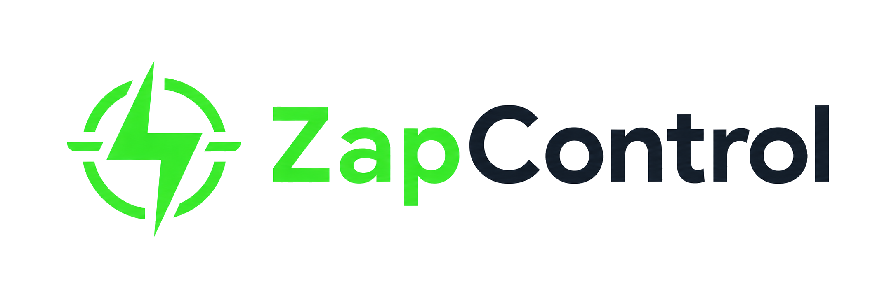
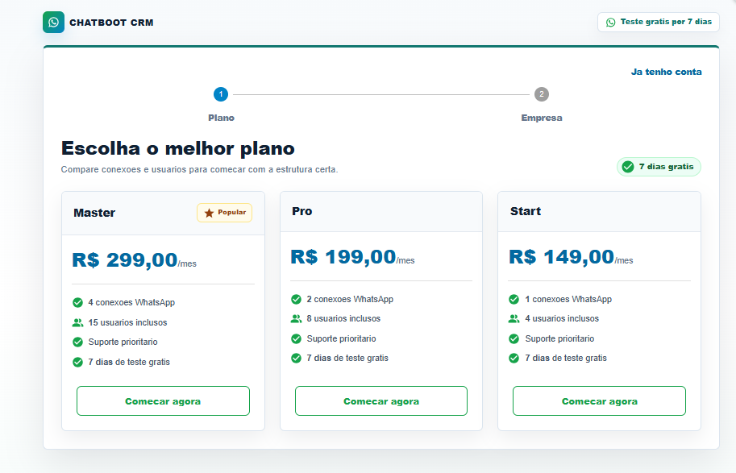

Central de atendimentos
Organize conversas abertas, aguardando retorno, fechadas e internas.

CRM para atendimento, vendas e relacionamento
Seu atendimento no WhatsApp mais rápido, organizado e automático, com clientes direcionados ao setor certo e respostas sem demora.
O que o ZapControl resolve
O ZapControl CRM ajuda sua empresa a responder mais rápido, distribuir atendimentos para o setor correto e manter o histórico de cada cliente acessível para a equipe.
Organize conversas abertas, aguardando retorno, fechadas e internas.
Direcione o cliente para vendas, suporte, financeiro ou outros setores.
Padronize mensagens frequentes e reduza o tempo de resposta.
Acompanhe produtividade, vendas, tarefas, contatos e resultados.
Visual do sistema
O painel concentra conversas, histórico, tickets, contatos, tarefas, campanhas, integrações e administração sem perder velocidade.
Para vários tipos de negócio
Planos para começar
Comece com uma conexão WhatsApp e aumente usuários, conexões e suporte conforme sua operação cresce.
Ver melhor plano
Como funciona
O atendimento entra na central e pode ser classificado automaticamente.
Filas, etiquetas e operadores deixam cada conversa no lugar correto.
Histórico, contatos e respostas rápidas reduzem demora e retrabalho.
Relatórios mostram volume, produtividade, vendas e oportunidades.
Mais controle para crescer
Perguntas frequentes
Ele centraliza e organiza os atendimentos para a equipe trabalhar com mais controle, sem depender de conversas espalhadas.
Sim. O sistema pode direcionar clientes para vendas, suporte, financeiro, recepcao ou qualquer fila criada para sua operacao.
Sim. O CRM ajuda a acompanhar oportunidades, tarefas, contatos, produtividade e resultados do atendimento.
Clique no botão de WhatsApp e solicite uma demonstração para entender o melhor formato para sua empresa.
Fale agora pelo WhatsApp e veja como o ZapControl CRM pode acelerar sua equipe.
Falar no WhatsApp